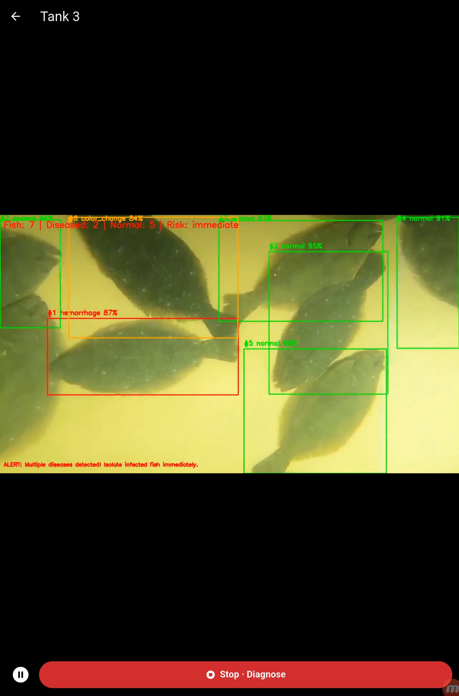
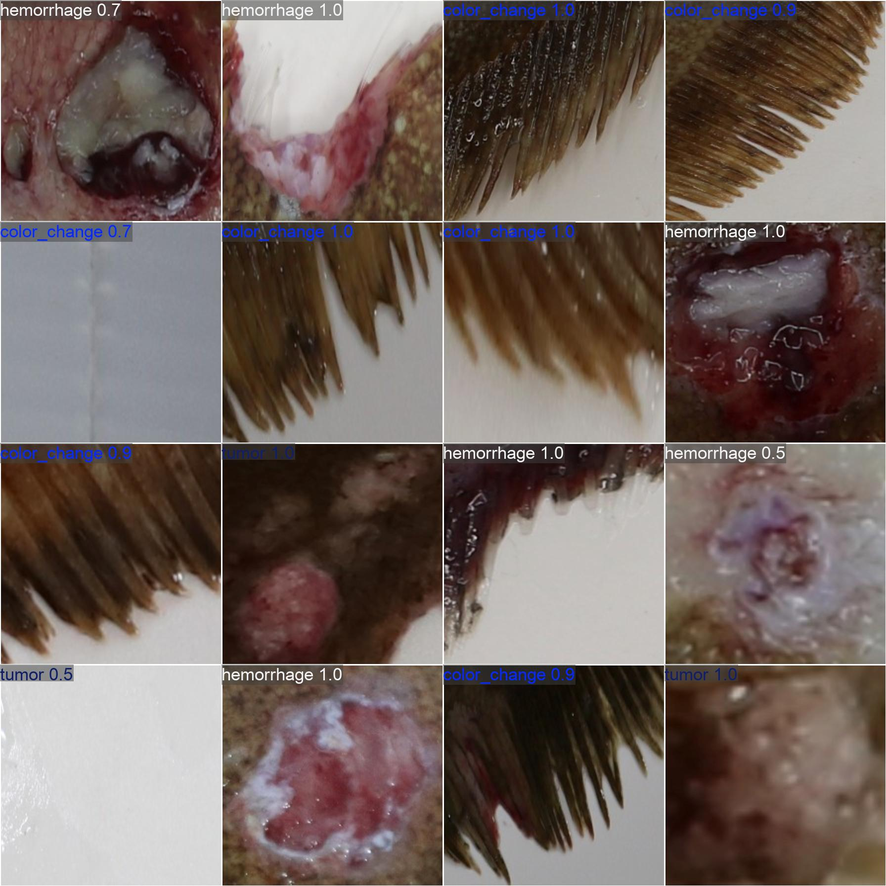

Flatfish doctor
From locating fish to reviewing visible symptoms in an app.

The problem
Focusing on each fish, not the tank background.
Tank footage includes ripples, lighting changes, and overlapping fish. Instead of classifying symptoms from the whole frame, the pipeline first locates fish and then classifies cropped images of each individual.
I implemented data preparation, detection and classification training, coordinate conversion, the inference API, and the results interface, so users could relate a prediction back to the fish’s location in the original image.
Data and models
Linking labels to crops and controlling class imbalance.
I mapped individual-fish and symptom labels from AI Hub’s flounder disease dataset to create classification crops. Unmapped labels were excluded, and per-class caps were applied to training samples to reduce class imbalance.
The seven visible states are normal, hemorrhage, white spots, spots/nodules, color change, emaciation, and ulcers. Rule-based mappings link symptom labels to disease information and suggested actions; the system does not identify the causative pathogen from video.
Validation
Reading detection and classification results separately.
Saved validation results show a peak symptom-classification Top-1 accuracy of 87.68% and a fish-detection mAP50 of 0.4455. These measure different tasks and are not combined into a single system accuracy.
Detection remains a bottleneck with overlap and turbid water. Even a well-performing classifier cannot produce a result for a fish missed by the detector, so false detections, missed fish, and field validation remain priorities.
- Peak validation Top-1
- 87.68%
- Fish-detection mAP50
- 0.4455

Application
Turning predictions into a readable interface.
I organized inference outputs into fish locations, symptom labels, and confidence values for the Flutter app. Connecting inference to the interface required consistent coordinates across the source image, crops, and display, as well as readable result logs and per-fish information.
The evidence covers dataset validation and an application demo, not demonstrated early-detection outcomes at working fish farms.
Code & evidence
YOLO / PyTorch / OpenCV / FastAPI / Flutter
Updated 13 October 2026 · Based on public repositories, project records, and verified evidence.